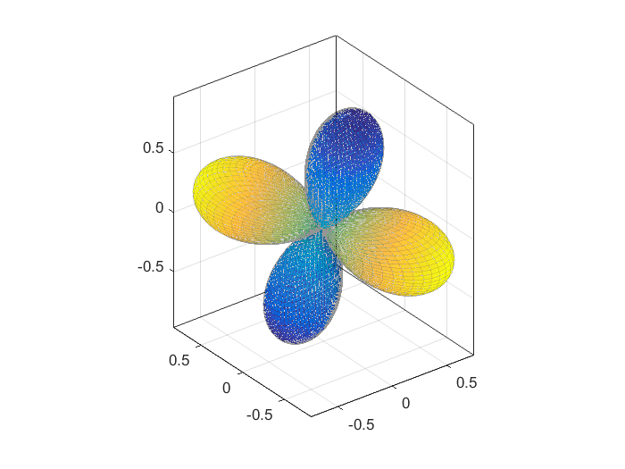

rpgen
Calculate radiation pattern using shear-tensile source model
Contents
Syntax
[Gp, Gs, Gsh, Gsv] = rpgen(strike, dip, rake, gamma, sigma, TKO, AZM);
Description
Use rpgen to calculate radiation pattern using shear-tensile source model following ref. [2,3]. The derived formula are supplementary material from paper [1].
rpgen(strike,dip,rake,gamma,sigma, TKO, AZM) calculates P-wave, S-wave, SH-wave and SV-wave radiation pattern using shear-tensile source model presented [see references 1, 2, 3 for details]. All input angles (strike, dip, rake of the fault, tensile angle gamma, takeoff angle matrix TKO and azimuth from the source to the observation point AZM) should be in degrees. The takeoff angle is measure from bottom. The function returns matrices of the same size as input TKO and AZM matrices.
Input parameters
strike, dip, rake - scalar values corresponding to fault plane parameters (degrees)
gamma - tensile angle in degrees (0 degrees for pure shear faulting and 90 degrees for pure tensile opening). For detailed description of tensile angle see ref. [3].
sigma - Poisson's ratio.
TKO - matrix of takeoff angles for which the corresponding radiation pattern coefficients will be calculated. The takeoff angles are measured in degrees from bottom direction upwards, i.e. they follow standard seismological convention. The takeoff angle 0 corresponds to downgoing seismic ray, 90 for horizontally going ray and 180 for upgoing ray. AZM - matrix of azimuths (in degrees) between source and receiver(s) measured from north towards east.
Output parameters
Gp, Gs, Gsh, Gsv - P-wave, S-wave, SH-wave, and SV-wave radiation pattern coefficients calculated for corresponding takeoff angles and azimuths specified in input TKO and AZM matrices.
References
[1] Kwiatek, G. and Y. Ben-Zion (2013). Assessment of P and S wave energy radiated from very small shear-tensile seismic events in a deep South African mine. J. Geophys. Res. 118, 3630-3641, doi: 10.1002/jgrb.50274
[2] Ou, G.-B., 2008, Seismological Studies for Tensile Faults. Terrestrial, Atmospheric and Oceanic Sciences 19, 463.
[3] Vavryčuk, V., 2001. Inversion for parameters of tensile earthquakes.” J. Geophys. Res. 106 (B8): 16339–16355. doi: 10.1029/2001JB000372.
Examples
The following script creates a double-couple radiation pattern for a specific fault and creates a 3D representation of the radiation pattern:
AZIMUTH = (0:4:360)*pi/180; TAKEOFF = (0:2:180)*pi/180; [AZIMUTH,TAKEOFF] = meshgrid(AZIMUTH,TAKEOFF); strike = 50; dip = 60; rake = -90; sigma = 0.25; gamma = 0; [GP, GS, GSH, GSV] = rpgen(strike,dip,rake,gamma,sigma, TAKEOFF*180/pi, AZIMUTH*180/pi); scale = abs(GP); YP = scale.*cos(AZIMUTH) .* sin(TAKEOFF); XP = scale.*sin(AZIMUTH) .* sin(TAKEOFF); ZP = scale.*-cos(TAKEOFF); surf(XP,YP,ZP,GP,'EdgeColor','none','FaceAlpha',0.9,'AmbientStrength',0.7,'EdgeColor','k','EdgeAlpha',0.1); axis equal; box on;